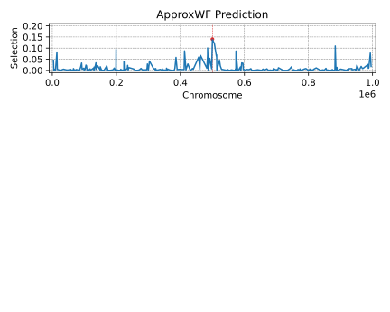

Madleina Caduff, Andreas Fueglistaler, Anna Parker, Youssef Tawfik,
Genome-wide Selection Scans

Predicting Selection from Time-series Data


Challenges
- Demography influence selection inference
- Computational challenge
- Neighbour loci are linked and show similar absolute values of selection:
SweepLinkHD
Two-layer Hidden Markov Model for:
- Joint inference of demography and selection
- Automatic learning of linkage
Hidden Markov Model (HMM)
$\text{Hidden States} = \Big\{$
$,\ $
$\Big\}$
$\text{Observations} = \Big\{$
$,\ $
$\Big\}$


SweepLinkHD: Two-layer HMM
SweepLinkHD Layer 1: Genome-wise
SweepLinkHD: Two-layer HMM
Ideas for Transition Matrix
- Most positions in genome are neutral
- Absolute selection of neighbour loci should be close
- Infer absolute selection $|s|$ and sign $\sigma$
Proposed Transition Matrix
$$Q(d_l) = \exp(d_l \cdot \Lambda),$$
$$\footnotesize \text{where } \Lambda = \kappa \begin{pmatrix} -1 & 1 & 0 & 0 & \ldots & 0 & 0 & 0\\ \mu & -1-\mu & 1 & 0 & \ldots & 0 & 0 & 0 \\ 0 & \mu & -1-\mu & 1 & \ldots & 0 & 0 & 0 \\ \vdots & \vdots & \vdots & \vdots & & \vdots & \vdots & \vdots\\ 0 & 0 & 0 & 0 & \ldots & \mu & -1-\mu & 1\\ 0 & 0 & 0 & 0 & \ldots & 0 & \nu \mu & -\nu \mu\\ \end{pmatrix} \begin{matrix} \leftarrow |s|=|s|_{\max} \phantom{-} \phantom{-} \phantom{-} \phantom{.}\\ \\ \\ \phantom{\ldots}\\ \\ \leftarrow |s|=|s|_0 \phantom{-} \phantom{-} \phantom{-} \phantom{-} \phantom{.}\\ \leftarrow \text{attractor (} |s|=0\text{)}\\ \end{matrix} $$Matrix $Q$ is parameterized by:
- $\kappa$ reflects the recombination rate
- $\nu$ reflects the fraction of neutral positions
- $\mu$ reflects the strength of selection
SweepLinkHD Layer 2: Time-wise
Hidden Diffusion Model


Transition density $p(\Delta t, x, y)$ is defined by demographic history
SweepLinkHD Overview
Two-layer Hidden Markov Model that:
- Handles multiple populations and wide range of demographic models
- Infers demography and selection jointly
- Infers linked selection
Results
Performance Illustration on Simulated Data


Performance Benchmarking

Real Data
Real Human Data
Real Data: Results


Conclusions
Conclusions
- SweepLinkHD adresses issues of existing tools
- It captures linkage between loci
- SweepLinkHD is faster and more accurate than existing tools
- SweepLinkHD allows to perform genome-wide scans for selection
Thank you!

Slides: